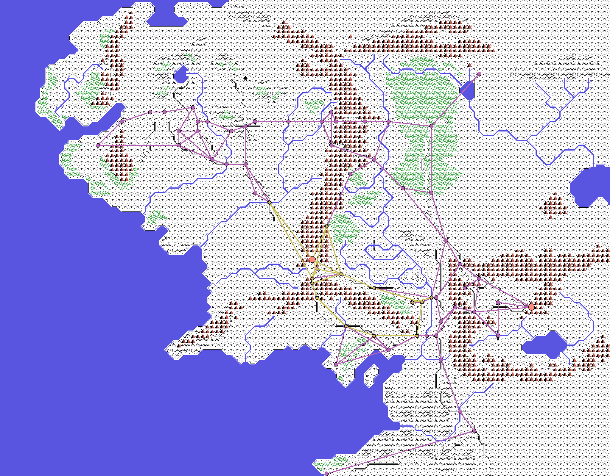
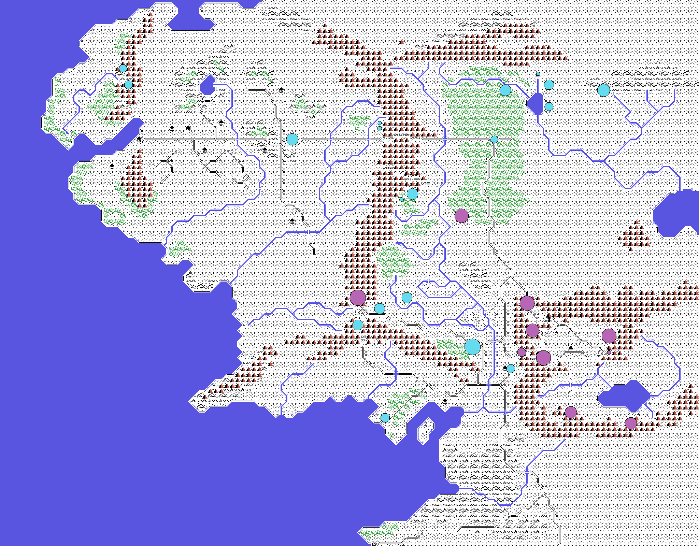

Qué hace de verdad el ordenador mientras tú miras el mapa: a dónde manda sus ejércitos, cómo pelea y por qué se te esfuman Gandalf y Aragorn.
Todo lo que hay aquí está leído en el desensamblado, no jugando. Al final de cada apartado van las rutinas exactas de las que sale, por si alguien quiere comprobarlo.
No hay ningún plan. La máquina no sabe dónde estás, no va a por ti, no defiende nada y no cambia de idea nunca. Lo único que hace es coger un ejército, mirar en qué cruce de carretera está y tirar una moneda al aire para decidir por cuál de las dos salidas sigue. Y otra vez. Y otra vez, durante toda la partida.
Todo lo demás —que parezca que te rodean, que aparezcan justo donde no quieres, que un héroe desaparezca sin avisar— sale de esa moneda y de tres o cuatro reglas muy tontas.
El juego lleva una lista de 256 fichas: tus personajes, tus ejércitos y los de Sauron, todos mezclados en la misma lista. En cada vuelta del programa mueve una sola, la siguiente de la lista, y pasa el turno. Cuando llega al final vuelve a empezar por la primera.
Ninguna unidad se mueve «más rápido» por ser más importante: todas tienen el mismo turno, y la máquina no decide a cuál mover. Le toca a la que le toca.
En el listado: MUEVE_LA_SIGUIENTE_UNIDAD (0x6719). El número de ficha vive dentro de la propia instrucción y da la vuelta solo al desbordar.
Cuando a un ejército de la máquina le toca turno y ya ha llegado a donde iba, hay que darle un destino nuevo. No lo elige: el juego trae grabada una red de cruces, y cada cruce tiene apuntados exactamente dos sitios a los que se puede seguir. El ordenador busca el cruce en el que está, tira la moneda y se va al otro.
Son dos redes distintas. Una grande, de 64 cruces, que cubre el mapa entero; y una pequeña, de 15, que es el pasillo del centro. Y la pequeña no es otra cosa que un trozo de la grande, renumerado: sus quince cruces son quince de los sesenta y cuatro, con las salidas reescritas para que apunten dentro de la lista corta.
Qué red te toca depende sólo de tu número en la lista: los ejércitos del último tramo van por la pequeña, los del tramo anterior por la grande, Sauron por la grande y Saruman por la pequeña. Los personajes con nombre no van por ninguna, porque a esos los mueves tú.

Los cruces caen justo encima de los caminos que el juego dibuja en el mapa: no es casualidad, es la misma red. Las rectas del dibujo son sólo «de este cruce al siguiente»; el camino de verdad lo va improvisando la unidad casilla a casilla.
Mirando el dibujo se entiende de golpe algo que cualquiera que haya jugado ha notado: los ejércitos oscuros aparecen siempre por los mismos sitios. Es que sólo pueden aparecer por ahí.
En el listado:DESTINO_POR_LA_RED_GRANDE(0x69C1), con la tabla de 64 puntos en 0x6BFB, yDESTINO_POR_LA_RED_CHICA(0x6993), con los 15 de 0x6CFB. Cada punto son cuatro bytes: columna, fila y sus dos salidas. El reparto, enREPARTE_POR_NUMERO(0x6A17).
Puesto el destino, andar es sencillo: se mira hacia dónde cae y se da un paso en esa dirección… casi. Antes de dar el paso, el juego coge un número al azar y le suma un bandazo a la dirección, así que a veces sale torcido. Por eso las tropas no van en línea recta y parecen dudar.
El bandazo no está repartido a partes iguales. De cada dieciséis tiradas, diez van rectas, cuatro se desvían hacia un lado y sólo dos hacia el otro: la máquina tira más hacia un lado que hacia el otro.
Si el terreno de la casilla no deja pasar, prueba otras dos veces con otro bandazo, y si tampoco, se pone a rodear el obstáculo: mira hacia los dos lados a ver por cuál sale antes y se pega a esa orilla hasta salir. El código que continúa el rodeo en los turnos siguientes tiene un fallo y siempre gira en el mismo sentido, salga o no salga a cuenta.
Y el terreno importa por tipo de tropa: cada clase de unidad trae su tablita de dieciséis terrenos con lo que le cuesta cada uno. Dos terrenos están marcados como prohibidos para todo el mundo, y otros cuestan cinco veces más que un camino. Ese coste no es sólo tiempo: es el número de turnos que la unidad se queda quieta antes de poder mover otra vez.
Esa tabla, por cierto, tiene diez fichas y no dieciséis. Los tipos de tropa que la cinta usa de verdad van del 0 al 9, y justo detrás de la décima ficha empieza ya el código del juego.
En el listado:DA_UN_PASO(0x67C5), los dieciséis bandazos en 0x6B23,TRES_INTENTOS(0x6809), y el rodeo enBUSCA_HUECO_GIRANDO(0x686E) ySIGUE_RODEANDO(0x68BD), con el fallo en 0x68CA. Las fichas de terreno, en 0x6D47.
Cada unidad lleva un número que baja cada vez que se mueve. Cuando cae por debajo de un mínimo, la unidad se planta donde esté y descansa hasta recuperarse; sólo entonces vuelve a andar. Nadie decide eso: es automático, y le pasa igual a tus ejércitos que a los de Sauron.
Ese mismo número decide luego cuánta vida tienen sus soldados en una batalla. Una tropa que llega reventada de andar pelea peor. Es lo más parecido a una idea táctica que hay en todo el juego, y ni siquiera es una decisión: es una resta.
En el listado: el contador está en 0xC200+n, se descuenta en 0x6752 y por debajo de 11 salta aSE_PLANTA(0x6951).DESCANSA(0x6945) lo sube hasta 40.
Uno espera que al empezar una partida el ordenador reparta sus ejércitos. No hace nada de eso. Las posiciones de las 256 fichas vienen grabadas en la cinta, tal cual, y empezar partida nueva sólo pone en marcha el reloj. La primera partida y la número cien empiezan exactamente igual.

Ahí está todo lo que hay en la partida, en su primer segundo. Los personajes con nombre salen apiñados en una sola casilla. Sauron tiene más tropa que tú desde el principio, y repartida en menos sitios y más gordos.
Sauron, además, no se mueve de su torre. En la partida completa que se midió en el emulador no dio un paso; y hay una regla que dice que si llegas a destruir su ejército, se lo devuelven a su casilla con la fuerza al máximo. No se le puede quitar de ahí.
En el listado: las tiras de estado 0xB900 (columna), 0xBA00 (fila), 0xBD00 (tipo) y 0xC500 (tropa), que llegan dentro del bloque alto de la cinta.EMPIEZA_PARTIDA_NUEVA(0x7F43) sólo toca el estado de 0xC600. La reposición de Sauron, enPON_EL_EJERCITO_16_EN_SU_SITIO(0x922C).
La batalla no se elige. Cada vez que una ficha —cualquiera— da un paso, el juego cuenta quién hay en esa casilla; si hay gente de los dos bandos, batalla, y sin preguntar. Basta con que una patrulla de orcos pase por encima de donde tú estabas parado.
Lo que pasa entonces:
En el listado: REPARTE_LOS_QUE_ENTRAN (0x8F70) y el cupo en 0x8FD1; el damero y los obstáculos en 0x9070; el sorteo cargado, con la tabla de tramos que se monta en 0x908D y se le da la vuelta para el segundo bando en 0x90F7.
Aquí tampoco hay mando único. Cada figura, cuando le toca, hace esto: si ya tiene a alguien pegado, pelea; si no, busca al enemigo más cercano… pero sólo dentro de una distancia que se sortea en ese momento. Si la tirada sale corta, no ve a nadie aunque lo tenga a tres casillas.
Para andar hacia su objetivo tiene dos formas de decidir la diagonal —mirar primero una coordenada o primero la otra— y echa a suertes cuál usa. Si la casilla a la que iba está ocupada, prueba otra diagonal, también al azar. Y si esa también lo está, se queda quieto.
Los turnos van en rueda de cuatro: en una vuelta se resuelven los golpes, en la siguiente se mueve un bando, y dos de las cuatro casillas de la rueda están vacías, no hacen nada en absoluto. De ahí ese ritmo tan raro, medio a tirones, de la batalla.
El golpe es un dado contra un número: si la tirada sale por debajo de lo que acierta esa figura, le quita vida al otro. A cero se cae. Unos pocos tipos de tropa se levantan hasta cuatro veces con la vida llena antes de caer del todo; los demás, ninguna.
En el listado:MUEVE_LAS_UNIDADES(0x897D),BUSCA_A_QUIEN_PERSEGUIR(0x8A86) con la distancia sorteada en 0x8A8E, las dos rutinas de dirección (0x8908 y 0x8925) con el sorteo en 0x89B4, la rueda de cuatro en 0x9163 sobre la tabla de 0x94B7, y los golpes enRESUELVE_LOS_COMBATES(0x8E95).
El menú ofrece «6. Nivel», del 1 al 15, y uno se imagina que ahí se decide cuánta tropa trae Sauron, o lo listo que es. No. Al empezar la partida, ese número se reparte sólo entre las unidades de un tipo: los orcos, y lo único que cambia es lo que aciertan cuando pelean.
Pasa que los orcos son casi todo el ejército de Sauron —132 unidades de las 138 que tiene, y 2.223 de sus 2.235 figuras—, así que la diferencia se nota. Y se nota mucho, porque el número se multiplica por sí mismo antes de usarse:
| nivel | un orco acierta |
|---|---|
| 1 | 0,4 % de los golpes |
| 5 | 9,8 % |
| 10 | 39,1 % |
| 15 | 87,9 % |
En el nivel 1 casi no dan una; en el 15 no fallan. Lo que quita cada golpe, la vida de las figuras, cuánta tropa hay o cómo se mueve por el mapa: eso no lo toca el nivel. Y el Anillo, tampoco.
En el listado: REPARTE_EL_NIVEL (0x5E8D) mete el nivel en el nibble bajo de 0xC100 de las unidades de tipo 5. En la batalla, 0x8D29 lo multiplica por sí mismo hacia 0xE400, que es contra lo que tira el byte al azar de 0x8ED0.
La explicación que se daba antes —«se quedan sin ejército»— no vale, y quien haya jugado mucho tiene razón en no tragársela. Los personajes con nombre no tienen ejército en ningún momento: la casilla que dice cuánta tropa lleva cada ficha vale cero para los veinticuatro, desde que la cinta termina de cargar. Van solos.
Y ahí está el problema. Cuando una figura cae en el tablero, el juego va a descontar un soldado del ejército al que pertenecía, pero antes comprueba si queda alguno. Se encuentra ese cero, lo entiende como «ya no queda nada» y borra la ficha del mapa en ese mismo instante. No hay desgaste, ni aviso, ni segunda oportunidad: el personaje desaparece al primer golpe que le tumba.
A eso hay que sumarle dos cosas:
Lo único que distingue a unos de otros es cuántas veces se levanta su figura antes de caer: Gandalf es de los que se levantan cuatro veces y Aragorn no se levanta ninguna. De ahí que Gandalf aguante media partida y Aragorn se vaya pronto, una y otra vez. No es mala suerte: es su tipo de tropa.
En el listado: el cero que se lee como agotado, en 0x8F06, que salta aEJERCITO_DESHECHO(0x8F0D) y de ahí aBORRA_EL_EJERCITO_DEL_MAPA(0x8F1A). El borrado del bando perdedor, en 0x91B4 y 0x91CE, repartido por 0x91DB. Las cuatro levantadas, enCUATRO_SI_ES_TIPO_0_1_O_7(0x8DC0).
Hay una casilla del mapa que el juego vigila en cada vuelta: Minas Tirith. Si en ella no queda ninguna unidad tuya y hay al menos una del enemigo, la partida se acaba ahí mismo. Sin batalla, sin mensaje, sin nada: pantalla de derrota.
Y trae trampa. Cuando das una orden sobre una casilla, se la das a todas las unidades que haya en ella, no a la que tú estabas mirando. Minas Tirith empieza con veintiuna: Denethor y veinte ejércitos de Gondor. Una sola orden y sale la guarnición entera.
Lo hemos visto pasar en una partida de verdad. A los noventa segundos de empezar, el jugador dio una orden sobre esa casilla y las veintiuna se pusieron en marcha; diez segundos después Minas Tirith estaba vacía. El día 49 del primer mes llegó andando una unidad de Sauron, se encontró la ciudad sola y ahí terminó la partida: cero batallas en todo el juego.
Así que la regla práctica es corta: no vacíes nunca Minas Tirith. Con dejar una unidad dentro, esto no se dispara.
En el listado:MIRA_QUIEN_ESTA_EN_LA_CASILLA_56_3F(0x92DE) y su salto a la derrota en 0x9309. Tiene dos llamadores, y el importante es 0x7F80, dentro del bucle de partida. Que (0x56,0x3F) es Minas Tirith lo dice la propia tabla de lugares del juego, en 0x7A5E. La orden para toda la casilla esORDEN_PARA_TODOS(0x7280).
Leído el programa entero, la lista de lo que no hay es más corta de escribir que la de lo que hay:
Lo que hay, en cambio, es un mapa enorme, mucha tropa repartida y un montón de monedas al aire por segundo. Con eso basta para que parezca que alguien está jugando contra ti. Y en cierto modo funciona mejor así: una máquina de 1988 con un plan de verdad habría sido más predecible que esta, que no tiene ninguno.
No son capturas de pantalla. El mapa se descomprime igual que lo hace el juego al arrancar y se pinta casilla a casilla repitiendo lo que hace su motor de dibujo; encima se marcan los cruces de las dos redes y las posiciones de salida, tal como vienen en los datos de la cinta. Los hace tools/render_redes.py, y si alguno de esos rangos estuviera mal etiquetado saldría ruido en vez de la Tierra Media.